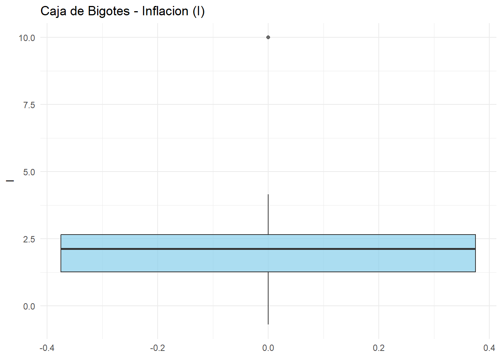
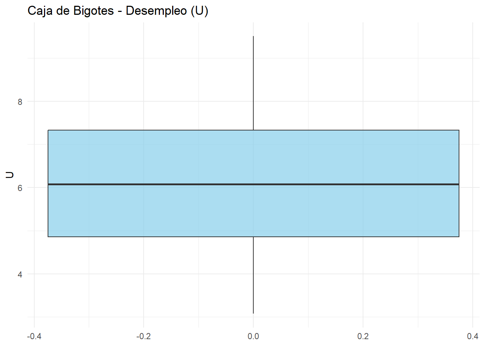

if(!require(readr)) install.packages("readr"); library(readr)
if(!require(dplyr)) install.packages("dplyr"); library(dplyr)
if(!require(ggplot2)) install.packages("ggplot2"); library(ggplot2)
if(!require(tidyr)) install.packages("tidyr"); library(tidyr)Curva de Phillips para Paises Bajos
Introduccíon:
Los Países Bajos son un país de interés para conocer si los modelos de la curva de Phillips funcionan, ya que presenta características diferenciales a otros países europeos. Cuenta con una gran agroindustria, donde uno de sus principales bienes de exportación son productos agrícolas y flores. Además, posee uno de los puertos más grandes de Europa en Ámsterdam, lo cual le permite ser un punto estratégico para la región. De igual manera, cuenta con un gran estado de bienestar, que implementa políticas públicas para la reducción del desempleo. Asimismo, dispone de un Banco Central cuya misión es garantizar la estabilidad de los precios.
Este articulo usaremos herramientas teoricás propias de la macroeconomía para el analisis de la curva de Phillips en Países Bajos, y para comprabar su verecidad en Páises Bajos usaremos intrumentos econometricos como son las series de tiempo con minimos cuadrados ordinales (OLS).
Para este analisis usaremos los datos de FRED para los datos de desempleo (U) y inflación (I), en el periodo de 1983 a 2024, para el cual necesitaremos hacerle una limpieza basica y una unión.
Introducción, Código:
Correremos las librerias de R necesarias para hacer las bases.
En este apartado cargaremos las bases de datos en nuestro environment.
DFU <- read.csv("LRHUTTTTNLA156N.csv")
DFI <- read.csv("FPCPITOTLZGNLD.csv")Ahora haremos la limpieza de NA y union de las bases necesarias para nuestro modelo.
#limpieza de datos y union
DFF <- full_join(DFU, DFI, by ='observation_date')
# DFF quedara definida como nuestra base
DFF <- DFF |> rename(U = LRHUTTTTNLA156N) |> rename(I = FPCPITOTLZGNLD) |> na.omit()
DFF$observation_date <- as.Date(DFF$observation_date, format = "%Y-%m-%d")
# aca le damo el formato de fechas, ademas del el renombre de las variables y limpieza de NAYa con esto tendriamos nuestra base cargada y limpia.
Conceptos : Que es curva de phillips y la nairu
Analisis explotario: como era Paises Bajos, inflación y desempleo.
La economía de los países bajos ha demostrado ser bastante dinámica y estable, su ubicación geográfica le ha permitido establecer vínculos comerciales con grandes potencias europeas y con el resto del mundo convirtiéndose en un centro vital del comercio. Su balance macroeconómico solido ha permitido en las últimas décadas un desempleo bajo-medio debido en gran parte a que cuenta con una fuerza altamente calificada y educada gracias a su sistema de educación de alta calidad, otro factor importante a tener en cuenta es su banco central, el cual se encarga de la estabilidad económica mediante las tasas de interés, buscando un balance entre el crecimiento y la estabilidad de los precios (teniendo como objetivo una tasa del 2,4%).
En el caso de la inflación y para tener una estabilidad en los precios, su gobierno busca generar políticas fiscales que mantengan un presupuesto equilibrado con el objetico de reducir la deuda pública y tener un sistema eficiente de impuestos. Un factor clave que ayuda a los países bajos con su gran volumen de comercio es que cuenta con el puerto más grande de Europa ubicado en Róterdam manejando millones de toneladas métricas al año y siendo una puerta de entrada crucial para el comercio de Europa y del mundo.
summary(DFF$I) Min. 1st Qu. Median Mean 3rd Qu. Max.
-0.6912 1.2732 2.1332 2.1990 2.6652 10.0012 plor2<- ggplot(DFF, aes(y = I)) +
geom_boxplot(fill = "skyblue", alpha = 0.7) +
labs(title = "Caja de Bigotes - Inflacion (I)", y = "I") +
theme_minimal()
plor2
Hemos encontrado que a lo largo del periodo estudiado la inflación típica de los países bajos ha estado entre un 1,3% y un 2,7% reflejando asi una economía estable durante la mayor parte del periodo. Uno de los picos más altos de inflación fue del 10% el cual probablemente se generó debido a episodios globales o tambien llamados crisis inflacionarias las cuales normalmente afectan a gran parte de Europa. Por último, podemos observar que hay una cercanía entre su media y su mediana (2,19 y 2,13 respectivamente) lo cual sugiere una distribución simétrica.
plor<- ggplot(DFF, aes(y = U)) +
geom_boxplot(fill = "skyblue", alpha = 0.7) +
labs(title = "Caja de Bigotes - Desempleo (U)", y = "U") +
theme_minimal()
summary(DFF$U) Min. 1st Qu. Median Mean 3rd Qu. Max.
3.075 4.854 6.075 6.106 7.329 9.508 plor
Por el lado del desempleo observamos un rango moderado (entre el 5 y el 7%), así mismo nuevamente su media y mediana se encuentra bastante cerca una de la otra (6,08 y 6,11) lo cual si lo unimos con el rango obtenido concluimos que el desempleo ha sido estable y sin valores atípicos representados en el diagrama de bigotes. Analizando sus mínimos y máximos, observamos un 3,08 en su mínimo que refleja un periodo de pleno empleo y un 9,51 en su máximo que puede reflejar un periodo de recesión en toda Europa.
Modelo:
Para analizar y concluir usaremos un modelo econometríco de la siguiente forma:
\(\pi_t= \beta_0 + \beta_1\pi_{t-1}+\beta_2u_t+\beta_3u_{t-1}+\epsilon\)
donde \(\pi\) es la inflación y \(\pi_{t-1}\) es su resago (el periodo anterior), \(u_t\) es el desempleo y \(u_{t-1}\) es su resago, además del termino de error \(\epsilon\)
Resultados: Juan PAblo
Conclusiones : Camilo
Vamos a realizar la lectura de las bases de datos de FRED
Ya con los datos leidos vamos a hacer la union de los datos
Vamos a hacer analisis exploratorio de los datos Media
plor<- ggplot(DFF, aes(y = U)) +
geom_boxplot(fill = "skyblue", alpha = 0.7) +
labs(title = "Caja de Bigotes - Desempleo (U)", y = "U") +
theme_minimal()
plorsummary(DFF$U) Min. 1st Qu. Median Mean 3rd Qu. Max.
3.075 4.854 6.075 6.106 7.329 9.508 plor2<- ggplot(DFF, aes(y = I)) +
geom_boxplot(fill = "skyblue", alpha = 0.7) +
labs(title = "Caja de Bigotes - Inflacion (I)", y = "I") +
theme_minimal()
plor2En este archivo vamos a realizar un analisis de la curva de Phillips para Paises Bajos
#Prueba con lM
modelo <- lm(I ~ lag(I,1) + U + lag(U,1), data=DFF)
summary(modelo)
Call:
lm(formula = I ~ lag(I, 1) + U + lag(U, 1), data = DFF)
Residuals:
Min 1Q Median 3Q Max
-1.6902 -0.5921 -0.2403 0.4909 6.6890
Coefficients:
Estimate Std. Error t value Pr(>|t|)
(Intercept) 3.84461 1.11849 3.437 0.00147 **
lag(I, 1) 0.30210 0.15431 1.958 0.05784 .
U -0.41908 0.29893 -1.402 0.16926
lag(U, 1) 0.03396 0.30621 0.111 0.91230
---
Signif. codes: 0 '***' 0.001 '**' 0.01 '*' 0.05 '.' 0.1 ' ' 1
Residual standard error: 1.404 on 37 degrees of freedom
(1 observation deleted due to missingness)
Multiple R-squared: 0.3029, Adjusted R-squared: 0.2464
F-statistic: 5.36 on 3 and 37 DF, p-value: 0.003627